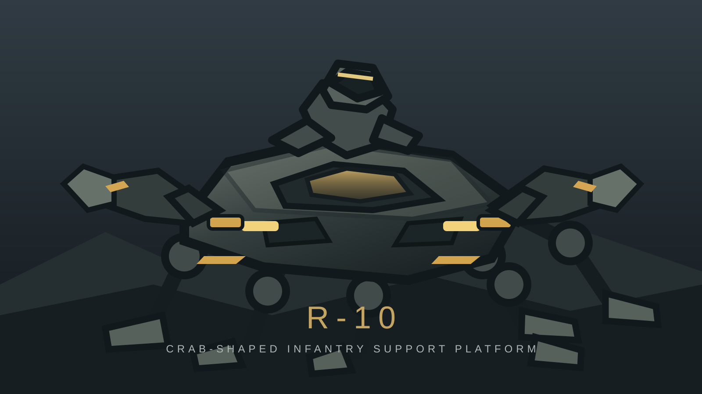

Супровід піхоти
Штатна конфігурація з оператором, броньованим корпусом, боковими маніпуляторами та двома голкометами.

Компактна крабоподібна платформа підтримки піхоти. Шестиногий механічний робот із двома боковими маніпуляторами-клешнями, напівлежачим місцем оператора та двома штатними голкометами біля передніх фар.
R-10 створений для супроводу піхоти та підтримки її дій на складній місцевості. Його основне призначення — бути компактною рухомою платформою, яка поєднує захищене пересування, спостереження, перевезення необхідного спорядження й евакуацію поранених. У бойовій обстановці робот діє поруч із підрозділом, а не замість нього.
Платформа має крабоподібний силует: широкий низький панцир корпуса, шість розставлених по периметру ніг і дві окремі клешні-маніпулятори. Задня частина базової машини залишається компактною — постійного великого вантажного відділення немає.
Центральний корпус широкий, плаский і низький, із заокругленим броньованим панциром. Шість ходових ніг кріпляться навколо нього трьома парами. Їхні вузли та сегменти помітно відрізняються від маніпуляторів, щоб силует машини читався як крабоподібний, а не комахоподібний.
Два маніпулятори встановлені з боків передньої половини корпуса, трохи попереду його центру. Вони розведені вліво й управо, як клешні справжнього краба. Це окремі рухомі вузли, не ноги й не частина передньої «морди». Їхні захвати мають виразну форму клешень.
У передній частині корпуса розташовані фари. Безпосередньо поруч із ними, симетрично ліворуч і праворуч, інтегровані два штатні голкомети. Вони є частиною переднього броньованого блока й не повинні візуально зливатися з маніпуляторами. У кадрі мають бути добре помітні і фари, і два окремі голкомети.
Оператор не сидить вертикально й не розміщується в закритій кабіні. Він осідлав корпус, як спортивний мотоцикл: груди та живіт спираються на похилий броньований ложемент, таз розташований на невеликому сідлі позаду, ноги зігнуті й опущені по боках. Верхня частина тулуба трохи піднята, голова перебуває над передньою частиною корпуса.
Посадка має виглядати природною та анатомічно переконливою. Оператор не лежить плазом і не сидить, як на танку. Це напівлежаче положення гонщика, пристосоване до руху на компактній шестиногій платформі.
Штатна конфігурація з оператором, броньованим корпусом, боковими маніпуляторами та двома голкометами.
На компактні верхні та задні точки кріплення можна встановити знімний вантажний контейнер або платформу. У базовому вигляді великого заднього відсіку немає.
Для евакуації встановлюється окремий знімний медичний модуль або ноші, не змінюючи базове шасі та крабоподібний силует.
Маніпулятори можуть працювати з обладнанням, переносити окремі предмети й допомагати долати перешкоди.
У будь-якому ракурсі R-10 повинен зберігати однакову геометрію: низький широкий панцир корпуса; рівно шість ходових ніг; дві клешні-маніпулятори з боків, трохи попереду; одне місце оператора з напівлежачою мотоциклетною посадкою; два голкомети біля передніх фар; відсутність постійного заднього вантажного відділення.
СТВОРИ РЕАЛІСТИЧНУ КІНЕМАТОГРАФІЧНУ ІЛЮСТРАЦІЮ ВИГАДАНОГО РОБОТА R-10 ДЛЯ ВСЕСВІТУ «ХАРАКТЕРНИКИ». НЕЗМІННИЙ КАНОН КОНСТРУКЦІЇ: R-10 — компактний низький широкий механічний краб для підтримки піхоти. Корпус має форму броньованого панцира, плаский і широкий, без високої надбудови. РІВНО ШІСТЬ ходових ніг — три з кожного боку корпуса, розташовані по периметру. Ноги мають потужні сегментовані механічні ланки, шарніри й широкі опорні ступні. РІВНО ДВА окремі маніпулятори-клешні встановлені з боків передньої половини корпуса, трохи попереду його центру. Вони розведені вліво та вправо, як клешні краба. Маніпулятори НЕ розташовані на передній «морді», НЕ є ногами й не входять до числа шести ходових кінцівок. На верхній частині корпуса — одне посадкове місце оператора. Посадка як на спортивному мотоциклі: оператор напівлежить, груди й живіт спираються на похилий броньований ложемент, таз на невеликому сідлі позаду, ноги зігнуті та розташовані з боків. Верхня частина тулуба трохи піднята. Не робити вертикальну посадку, закриту кабіну чи пласке лежання. У передній частині корпуса — дві виразні фари. БІЛЯ ФАР, симетрично ліворуч і праворуч, інтегровані РІВНО ДВА голкомети. Голкомети є окремими компактними вузлами переднього броньованого блока, не є маніпуляторами та не зливаються з фарами. У базовій конфігурації позаду НЕМАЄ великого вантажного відсіку або контейнера. Зовнішність: матова темно-оливкова й графітово-сіра броня, невеликі жовті технічні маркування, реалістичні стики панелей, люки, шарніри, приводи, амортизатори та захисні кожухи. Пропорції компактного, але важкого промислового робота. Виразний крабоподібний силует. СТИЛЬ І КОМПОЗИЦІЯ: Фотореалістична кінематографічна наукова фантастика, правдоподібні матеріали, природне фізичне освітлення, помірна кількість пилу й атмосферних ефектів. Достатньо світла, щоб конструкція читалася. Не мультфільм, не аніме, не іграшка. Горизонтальний формат 16:9 за замовчуванням. Показувати робота повністю, не обрізаючи ноги, маніпулятори чи оператора. Базовий ракурс — три чверті спереду, трохи згори. ПАРАМЕТРИ КОНКРЕТНОЇ ІЛЮСТРАЦІЇ: Тип кадру: [геройний вигляд / сцена з піхотою / рух / перевезення / евакуація / крупний план / технічна схема]. Ракурс: [три чверті спереду / збоку / ззаду / згори / крупний план]. Дія: [описати]. Середовище: [описати]. Освітлення: [описати]. Додаткові деталі: [лише потрібні для цього кадру]. ПЕРЕВІРКА ПЕРЕД ЗАВЕРШЕННЯМ: Рівно шість ніг; рівно два бокові передні маніпулятори-клешні; один оператор у напівлежачій посадці; два голкомети біля фар; немає постійного заднього вантажного відсіку; корпус широкий і низький, силует саме крабоподібний. Якщо щось не відповідає — виправити зображення, не змінюючи канон.